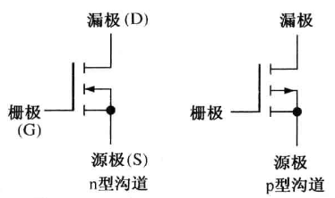
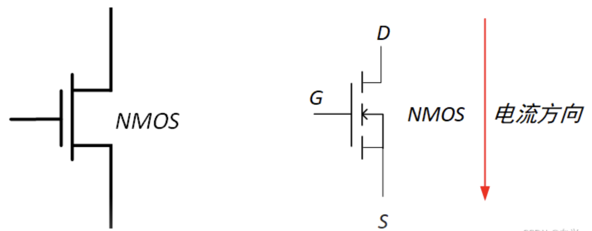
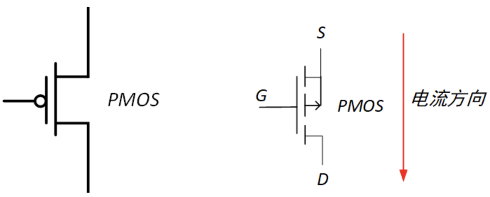
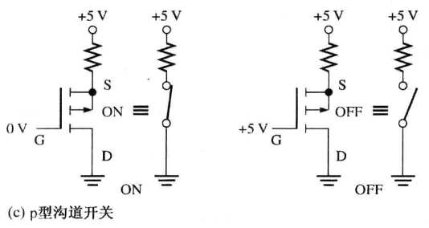

集成电路(CMOS&TTL)
逻辑电平规范与抗噪¶
逻辑电平规范¶
保证输出的电平作为下一级输入是有效的
CMOS¶

TTL¶

噪声容限¶
电路抗噪度的一个衡量标准叫做噪声容限(noisemargin)，用伏特表示。对于一个给定的逻辑电路，有两个噪声容限值：
- 噪声容限高电平 (\(V_{NH}\)) (Noisemargin High)
- 噪声容限低电平 (\(V_{NL}\)) (Noisemargin Low)
这两个参数由如下的公式定义：
有时看到噪声容限是用 \(V_{CC}\) 的百分比来表示的

负载和扇出¶
当一个逻辑门的输出连接到了一个或多个其他门的输人时，驱动门上就会有一个负载，对于一个给定的门，它可以驱动的负载门输人是有数量限制的。这个限制就称为这个门的扇出。
基本概念：
- 灌电流 —— 输出为低电平时，负载电流从外部电路注入输出端口；
- 拉电流 —— 输出为高电平时，负载电流从输出端口流出到外部电路；
- 扇入系数 —— 门电路允许的输入端的个数；
- 扇出系数 —— 门电路允许驱动的同类型负载门的个数；
CMOS¶
当驱动门的输出是高电平时，负载门的输入电容通过驱动门的输出电阻充电。当驱动门电路的输出是低电平时，电容放电：

如果给驱动门的输出添加更多的负载门输人，那么总的电容将会增加，因为输入电容实际上是并行出现的。电容的增加会延长充电和放电时间，因此就会降低这个门电路的最大工作频率。因此，CMOS 门电路的扇出是和工作频率有关的。负载门输入越少，最大频率就越高。
TTL¶
TTL 驱动门向处于高电平状态的负载门提供灌电流 (\(I_{IH}\))，从处于低电平状态的负载门吸收拉电流 (\(I_{IL}\))。
TTL 电路的功耗在工作频率的范围以内基本上是恒定功率。

负载元件越多，驱动门承载的灌电流或拉电流就越大，驱动门中内阻的压降就越大，要保证不能脱离标准逻辑电平，限制了扇出。
CMOS¶
Abstract
数字电路中只考虑增强型 MOS 管

NMOS¶
NMOSFET，N 型金氧半场效晶体管
N 沟道增强型 MOS 管，箭头往里走，栅级无圆圈

左侧是简化符号，右侧是标准符号
| 状态 | 栅级 G | 漏级 D | 源级 S (接地) |
|---|---|---|---|
| 导通 | 1 | 0 | 1 |
| 关闭 | 0 | 1 | 0 |

PMOS¶
PMOSFET，P 型金氧半场效晶体管
P 沟道增强型 MOS 管，箭头往外走，栅级有圆圈

左侧是简化符号，右侧是标准符号
| 状态 | 栅级 G | 漏级 D | 源级 S (接电源) |
|---|---|---|---|
| 导通 | 0 | 1 | 0 |
| 关闭 | 1 | 0 | 1 |

CMOS¶
由 NMOS 和 PMOS 两种管子组成的互补 MOS 电路，即 CMOS 电路。
CMOS 电路元件不使用的管脚尽量不能悬空
非门¶

与非门¶

Abstract
或非门和与非门之间存在对偶关系，将 NMOS 和 PMOS 交换、高电平和低电平交换，就能够相互转换
或非门¶

三态门¶
三态门引入了高阻抗状态。
三态门的 3 个状态如下：

一个错误 ❌ 的三态 CMOS 反相器：

\(\overline{Enable}\) 和输入是对称设计的，所以输入为高电平时，输出也一样处于高阻抗状态。
正确设计：

漏极开路门¶
Open-drain，OD 门
术语漏极开路的意思是输出晶体管的漏极端没有连接，必须从外部通过负载连接到 \(V_{DD}\)。
实现大负载
与非门示例：

TTL¶
TTL 电路中悬空的输入端将起到高电平的效果。
TTL 电路元件不使用的管脚尽量不能悬空，避免噪声影响。
双极型晶体管¶
Bipoplar Junction Transistor (BJT) (三极管)
开关效应原理图：

TTL 门电路¶
非门¶

工作原理如下：

与非门¶

集电极开路门¶
Open-Collector Gates，OC 门

驱动 LED 和灯泡：